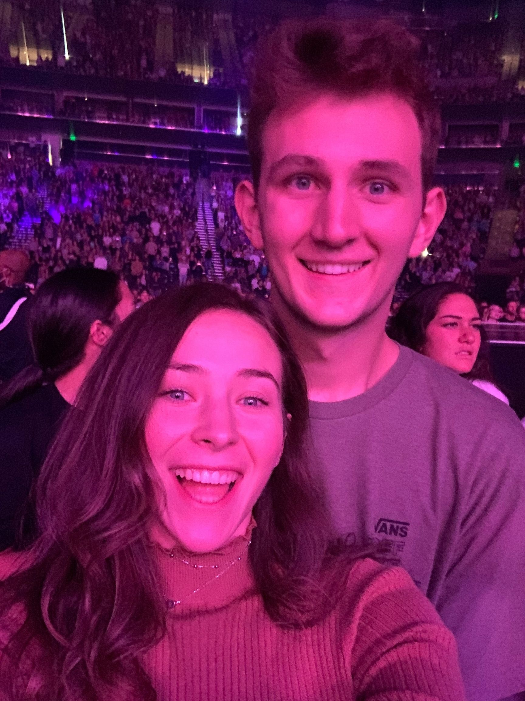

Audrey Seager

My husband and I at a Dan+Shay Concert last year.
In this class, above learning ASP.NET and C#, I ultimately want to learn how to solve problems on my own and become a quicker learner.
This is a goal of mine for all four of my core classes, but especially this one because I struggle a bit more with development than the other
core subjects. I want to learn C# enough to be able to do things on my own. I want to learn how to rely on my own intuition just as much as the videos, so that I can prepare myself better for industry where
I won't have a TA to turn to.
Top #3 Jobs out of Graduation:
- Tech Operations Consultant for Event Companies
- User Experience Designer
- Web Developer for Startup
Calculate Final Grade